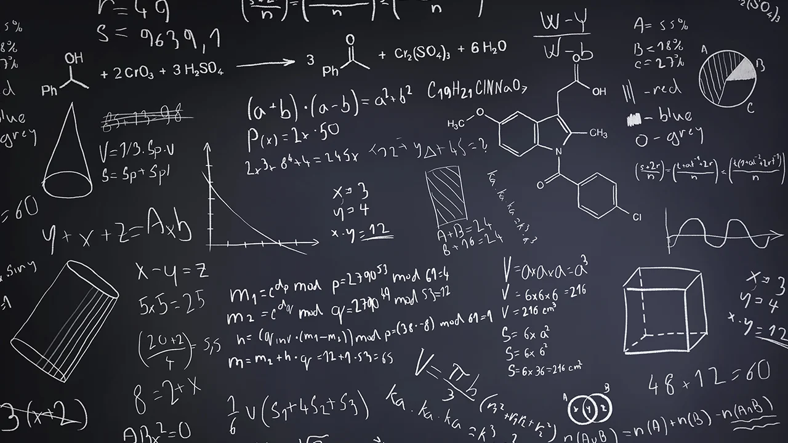

Algoritmia
Actualmente algoritmo se usa para denominar a la secuencia de pasos a seguir para resolver un problema usando un computador (ordenador). Por esta razón, la algoritmia o ciencia de los algoritmos, es uno de los pilares de la informática (ciencia de la computación en inglés).
